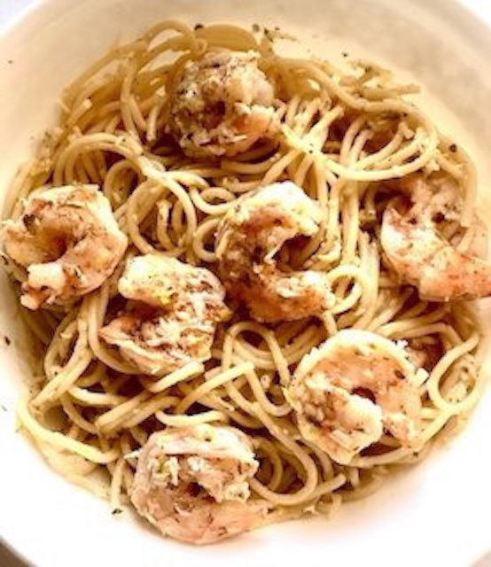

Lemon Shrimp Pasta

Description
A very lightly sauced pasta with lemon and shrimp. Makes a refreshing and filling dinner.
Ingredients
- 1 package fresh linguine pasta
- 1 tbsp olive oil
- 1 pound shrimp, peeled and deveined
- 1 tsp salt
- 1 tsp ground black pepper
- Juice and zest from one lemon
- 2 tbsp chopped fresh parsley
- 2 tbsp butter
- 1 cup freshly grated Parmesan cheese
Steps
- Bring a large pot of lightly salted water to a boil.
- Meanwhile, heat oil in a pan over medium heat. Coat shrimp with salt and pepper. Cook and stir shrimp in the hot oil
until opaque, about 2 minutes per side.
- Cook linguine in the boiling water until tender yet firm to the bite, 1 to 3 minutes.
- Combine lemon zest and juice in a small saucepan over medium heat and bring to a simmer. Sprinkle in parsley and
stir in butter until melted. Add 2 tbsp of the pasta water and stir. Drain pasta. Add shrimp to the lemon sauce.
Mix pasta, shrimp, sauce and Parmesan cheese together in a large serving bowl.